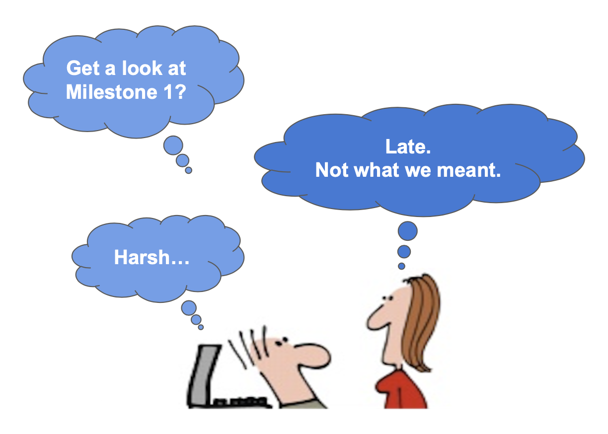
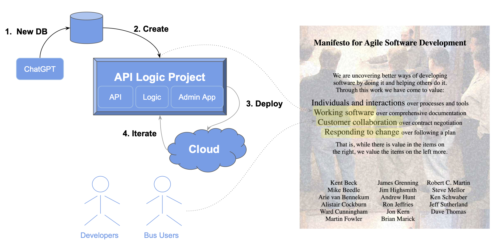
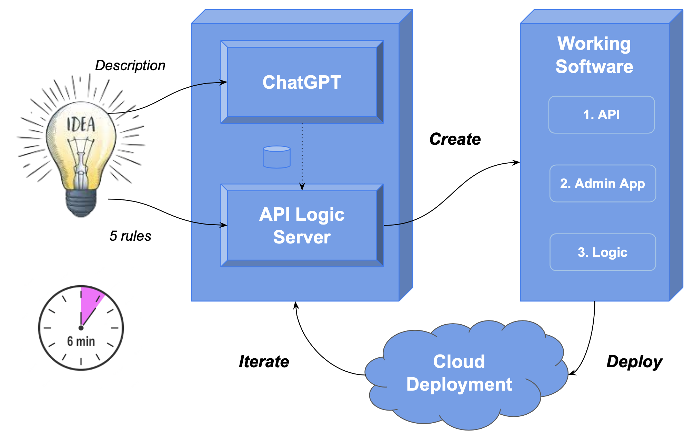

AI Delivers Agile
 AI-Driven Automation with ChatGPT Delivers the Agile Vision
AI-Driven Automation with ChatGPT Delivers the Agile Vision
Agile wisely advises getting Working Software as fast as possible, to facilitate Business User Collaboration and Iteration. ChatGPT and API Logic Server deliver this vision, with 1 hour project cycles:
- Create Database With ChatGPT
-
Create Working Software Now with API Logic Server:
- Creates executable, customizable projects from databases: API with Swagger, Admin App
- Declare logic and security with spreadsheet-like rules, using your IDE
-
Deploy for Collaboration with API Logic Server: e.g. to the Azure Cloud
- Iterate: add additional rules, with a pinch of Python as required
This process leverages your existing IT infrastructure: your IDE, GitHub, the cloud, your database… open source.
To give it a try, follow the procedure below. Allow 20 minutes, a bit more if you are new to Azure. This page is an article reprint, so does not have detailed testing instructions. For a more guided tour, see GenAI Microservices Automation.
The Problem: Late, and Wrong

We've all lived the unpleasant reality depicted here:
The harsh truth is that working screens communicate best - not docs, diagrams, etc.
But working screens are based on projects that are complex and time-consuming. So, misunderstandings are discovered late in the project, with significant loss of time and effort.
Agile Vision: Working Software Drives Collaboration and Iteration
Agile wisely advises getting Working Software as fast as possible, to facilitate Business User Collaboration and Iteration. That’s not happening by coding to a framework…
So, How do we get Working Software, Now? And rapid iteration?
Our Approach: AI-Driven Automation Delivers the Agile Vision

This article illustrates how create working software in hours instead of weeks/months, like this:
- Create Database With ChatGPT
- Create Working Software Now with API Logic Server:
- Creates executable, customizable projects from databases
- Declare logic and security with spreadsheet-like rules using your IDE
- Deploy for Collaboration with API Logic Server: e.g. to the Azure Cloud
- Iterate: add additional rules, with Python as required
This process leverages your existing IT infrastructure: your IDE, GitHub, the cloud, your database… open source
Let's see how.
In a Nutshell
For the truly impatient, here’s the basic process (takes under 10 minutes; details explained in remainder of article; video here):
1. Use ChatGPT to input a description, and create the database
1a. Input the system description below, copy the DDL and save it:
$ pbpaste > ai_customer_orders.sql # copied DDL
$ pbpaste >> ai_customer_orders.sql # append copied insert statements
1b. Create the database:
2. Create an executable API Logic Project
2a. Create the Project
$ ApiLogicServer create \
--project_name=ai_customer_orders \
--db_url=sqlite:///ai_customer_orders.sqlite
2c. In the VSCode terminal window, add security:
2c. Add 5 rules, using IDE code completion)
3. Deploy for Collaboration
3a. Push the Project to Git (or use ours)
3b. Build the image
3c. Login to the Azure Portal, and
$ git clone https://github.com/ApiLogicServer/ai_customer_orders.git
$ cd ai_customer_orders
$ sh devops/docker-compose-dev-azure/azure-deploy.sh
4. Iterate with Logic, and Python as required
Now let's alter the app to give volume discounts for carbon neutral purchases.
4a. Add a Database Column
4b. Rebuild the project, preserving customizations
4c. Update ui/admin/admin.yml
4d. Alter the logic, as shown below
1. ChatGPT Database Generation
Obtain the sql
Use ChapGPT to generate SQL commands for database creation:
Create database definitions from ChatGPT
Create a sqlite database for customers, orders, items and product
Hints: use autonum keys, allow nulls, Decimal types, and foreign keys.
Include a notes field for orders.
Create a few rows of only customer and product data.
Enforce the Check Credit requirement:
- Customer.Balance <= CreditLimit
- Customer.Balance = Sum(Order.AmountTotal where date shipped is null)
- Order.AmountTotal = Sum(Items.Amount)
- Items.Amount = Quantity * UnitPrice
- Store the Items.UnitPrice as a copy from Product.UnitPrice
Copy the generated SQL commands into a file, say, ai_customer_orders.sql:
CREATE TABLE Customers (
CustomerID INTEGER PRIMARY KEY AUTOINCREMENT,
Name TEXT NOT NULL,
Balance DECIMAL(10, 2) NULL,
CreditLimit DECIMAL(10, 2) NULL
);
-- Create the Products table
CREATE TABLE Products (
ProductID INTEGER PRIMARY KEY AUTOINCREMENT,
Name TEXT NOT NULL,
UnitPrice DECIMAL(10, 2) NULL
);
-- Create the Orders table
CREATE TABLE Orders (
OrderID INTEGER PRIMARY KEY AUTOINCREMENT,
CustomerID INTEGER NULL,
AmountTotal DECIMAL(10, 2) NULL,
ShipDate DATE NULL,
Notes TEXT NULL,
FOREIGN KEY (CustomerID) REFERENCES Customers(CustomerID)
);
-- Create the Items table
CREATE TABLE Items (
ItemID INTEGER PRIMARY KEY AUTOINCREMENT,
OrderID INTEGER NULL,
ProductID INTEGER NULL,
Quantity INTEGER NULL,
Amount DECIMAL(10, 2) NULL,
UnitPrice DECIMAL(10, 2) NULL,
FOREIGN KEY (OrderID) REFERENCES Orders(OrderID),
FOREIGN KEY (ProductID) REFERENCES Products(ProductID)
);
-- Insert sample customers
INSERT INTO Customers (Name, Balance, CreditLimit) VALUES
('Customer 1', 1000.00, 2000.00),
('Customer 2', 1500.00, 3000.00);
-- Insert sample products
INSERT INTO Products (Name, UnitPrice) VALUES
('Product A', 10.00),
('Product B', 20.00);
Create the database
We avoid database installs / server management by using SQLLite as our target database:
Note: if you use the names above, you can save time by using the docker image and git project that we've already created.
2. Create Working Software
Given a database, API Logic Server can create an executable, customizable project:
$ ApiLogicServer create \
--project_name=ai_customer_orders \
--db_url=sqlite:///ai_customer_orders.sqlite
This creates a project you can open with VSCode. Establish your venv, and run it via the first pre-built Run Configuration. To establish your venv:
python -m venv venv; venv\Scripts\activate # win
python3 -m venv venv; . venv/bin/activate # mac/linux
pip install -r requirements.txt
Add Security
In a terminal window for your project:
Declare Logic
Rules are an executable design. Use your IDE (code completion, etc), to replace 280 lines of code with the 5 spreadsheet-like rules in logic/declare_logic.py. Note they map exactly to our natural language design:
""" Declarative multi-table derivations and constraints, extensible with Python.
Brief background: see readme_declare_logic.md
Use code completion (Rule.) to declare rules here:
1. Customer.Balance <= CreditLimit
2. Customer.Balance = Sum(Order.AmountTotal where unshipped)
3. Order.AmountTotal = Sum(Items.Amount)
4. Items.Amount = Quantity * UnitPrice
5. Items.UnitPrice = copy from Product
"""
Rule.constraint(validate=models.Customer, # logic design translates directly into rules
as_condition=lambda row: row.Balance <= row.CreditLimit,
error_msg="balance ({round(row.Balance, 2)}) exceeds credit ({round(row.CreditLimit, 2)})")
Rule.sum(derive=models.Customer.Balance, # adjust iff AmountTotal or ShippedDate or CustomerID changes
as_sum_of=models.Order.AmountTotal,
where=lambda row: row.ShipDate is None) # adjusts - *not* a sql select sum...
Rule.sum(derive=models.Order.AmountTotal, # adjust iff Amount or OrderID changes
as_sum_of=models.Item.Amount)
Rule.formula(derive=models.Item.Amount, # compute price * qty
as_expression=lambda row: row.UnitPrice * row.Quantity)
Rule.copy(derive=models.Item.UnitPrice, # get Product Price (e,g., on insert, or ProductId change)
from_parent=models.Product.UnitPrice)
Observe rules are declared in Python. Given IDE services for code completion, this is using Python as a DSL (Domain Specific Language). You can paste the code above into logic/declare_logic.py (you will need to adjust tabs).
Re-use and Optimization
We can contrast this to the (not shown) ChatGPT attempt at logic. With declarative logic, you get:
-
Automatic Reuse: the logic above, perhaps conceived for Place order, applies automatically to all transactions: deleting an order, changing items, moving an order to a new customer, etc.
-
Automatic Optimizations: sql overhead is minimized by pruning, and by elimination of expensive aggregate queries. These can result in orders of magnitude impact.
ChatGPT created triggers that missed many Use Cases, and were inefficient. They were also not transparent; Business Users can read the rules and spot issues ("hey, where's the tax?"), certainly not triggers.
3. Deploy for Collaboration
API Logic Server also creates scripts for deployment.
a. Containerize
In a terminal window for your project:
b. Test your Image
You can test the image in single container mode:
c. Upload Image (optional)
You would next upload the image to docker hub.
If you use the same names as here, skip that, and use our image:
apilogicserver/aicustomerorders.
d. Push the project
It's also a good time to push your project to git. Again, if you've used the same names as here, you can use our project.
e. Deploy to Azure Cloud
Login to the azure portal, and:
git clone https://github.com/ApiLogicServer/ai_customer_orders.git
cd ai_customer_orders
sh devops/docker-compose-dev-azure/azure-deploy.sh
4. Iterate with Logic
Not only are spreadsheet-like rules 40X more concise, they meaningfully simplify maintenance. Let’s take an example.
Green Discounts
Give a 10% discount for carbon-neutral products for 10 items or more.
Automation still applies; we execute the steps below.
a. Add a Database Column
b. Rebuild the project, preserving customizations
cd .. project parent directory
ApiLogicServer rebuild-from-database --db_url=sqlite:///database/db.sqlite
c. Update your admin app
Use your IDE to merge /ui/admin/admin-merge.yml -> /ui/admin/admin.yml.`
d. Declare logic
def derive_amount(row: models.Item, old_row: models.Item, logic_row: LogicRow):
amount = row.Quantity * row.UnitPrice
if row.Product.CarbonNeutral and row.Quantity >= 10:
amount = amount * Decimal(0.9)
return amount
Rule.formula(derive=models.Item.Amount, calling=derive_amount)
This simple example illustrates some significant aspects of iteration.
Maintenance: Logic Ordering
Along with perhaps documentation, one of the tasks programmers most loathe is maintenance. That’s because it’s not about writing code, but it’s mainly archaeology - deciphering code someone else wrote, just so you can add 4 or 5 lines they’ll hopefully be called and function correctly.
Rules change that, since they self-order their execution (and pruning) based on system-discovered dependencies. So, to alter logic, you just “drop a new rule in the bucket”, and the system will ensure it’s called in the proper order, and re-used over all the Use Cases to which it applies.
Extensibility: Rules Plus Python
In this case, we needed to do some if/else testing, and it was more convenient to add a dash of Python. While you have the full object-oriented power of Python, this is simpler, more like Python as a 4GL.
What’s important is that once you are in such functions, you can utilize Python libraries, invoke shared code, make web service calls, send email or messages, etc. You have all the power of rules, plus the unrestricted flexibility of Python.
Debugging: IDE, Logging
The screen shot above illustrates that debugging logic is what you’d expect: use your IDE's debugger.
In addition, the Logic Log lists every rule that fires, with indents for multi-table chaining (not visible in this screenshot). Each line shows the old/new values of every attribute, so the transaction state is transparent.
Rebuild: Customizations Preserved
Note we rebuilt the project from our altered database, without losing customizations.
Summary

In 6 minutes, you've used ChatGPT and API Logic Server to convert an idea into working software, deployed for collaboration, and iterated to meet new requirements.
Appendices
Sqlite and persistence
For information on database and directory creation, click here. Since the database is stored and accessed in the container, cloud changes are not persisted over runs. This is useful for demo systems where each run starts with fresh data.
An option for cloud sqlite persistence is under investigation. Preliminary thoughts:
- Update the project to use blob storage
- On Server start, restore the database from blob storage to the image
- On Server Exit, use
atexitto save the database from the image to blob storage
There are also products that automate this, such as LiteStream.
Of course, you can use a database such as MySQL, Postgres, Oracle or SqlServer, as described here. Local databases can be migrated to Azure in a number of ways, such as this example using MySqlWorkBench.